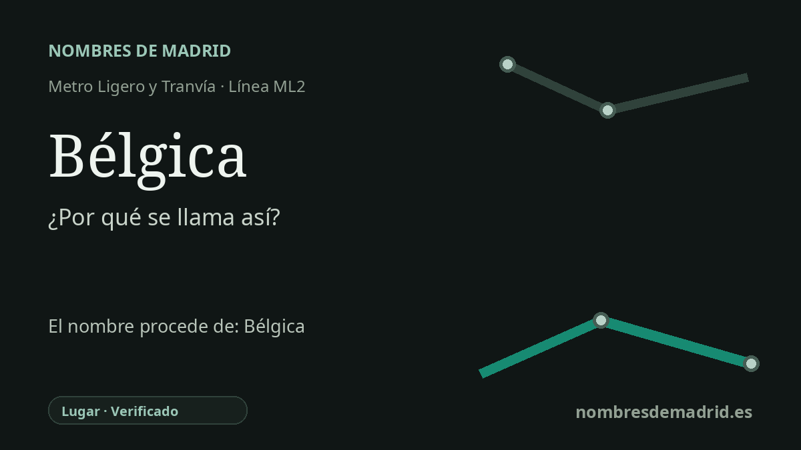

Publicado el · Investigación de Nombres de Madrid · Cómo verificamos cada origen · 6 fuentes consultadas
Respuesta rápida
La estación Bélgica toma su nombre de la calle de Bélgica, situada junto a la parada en Pozuelo de Alarcón. La calle forma parte del entorno de la Avenida de Europa, donde se agrupan nombres de países y capitales como Francia, Bruselas, París, Lisboa, Holanda y Luxemburgo.
La historia del nombre
La estación Bélgica toma su nombre de una calle próxima: la calle de Bélgica, en Pozuelo de Alarcón. Metro Ligero Oeste describe la parada como situada en la vía de las Dos Castillas junto a la intersección con la calle Bélgica, de modo que el origen inmediato del nombre queda especialmente claro.
El nombre de la calle alude a Bélgica, pero el contexto local es importante. La cartografía oficial de transportes de Pozuelo muestra la calle de Bélgica dentro del entorno de la Avenida de Europa, rodeada de muchos otros nombres europeos: calle de Francia, calle de Bruselas, calle París, calle Lisboa, calle de Estrasburgo, calle de Luxemburgo, calle de Holanda, calle de Malta, calle de Mónaco y calle de Grecia, entre otros.
Esta zona de Pozuelo corresponde a un paisaje urbano moderno, no a un topónimo antiguo del pueblo. Una síntesis histórica de cronistas locales señala que a finales de los años ochenta y principios de los noventa se levantaron los edificios de la ampliación de la Casa de Campo, identificada con la Avenida de Europa, lo que contribuyó a casi duplicar la población de Pozuelo. Esa cronología encaja con el carácter planificado y contemporáneo del conjunto de nombres de calles.
La historia transportista llegó después. La Comunidad de Madrid incluye Bélgica entre las estaciones de la línea de metro ligero Colonia Jardín-Pozuelo de Alarcón, y explica que el trazado sirve el eje que va desde Colonia Jardín por Prado del Rey y Somosaguas hasta la Avenida de Europa entre Pozuelo y Aravaca. Metro Ligero Oeste se inauguró el 27 de julio de 2007 y el nombre de la estación entró en uso con esa apertura.
La explicación mejor respaldada es, por tanto, sencilla: la estación Bélgica se llama así por la calle de Bélgica, y esa calle forma parte de un patrón geográfico europeo en el entorno de la Avenida de Europa. Es razonable relacionar ese patrón con el desarrollo urbanístico de finales del siglo XX, pero no consta el acuerdo municipal que pruebe la fecha exacta ni la motivación oficial del nombre de la calle.